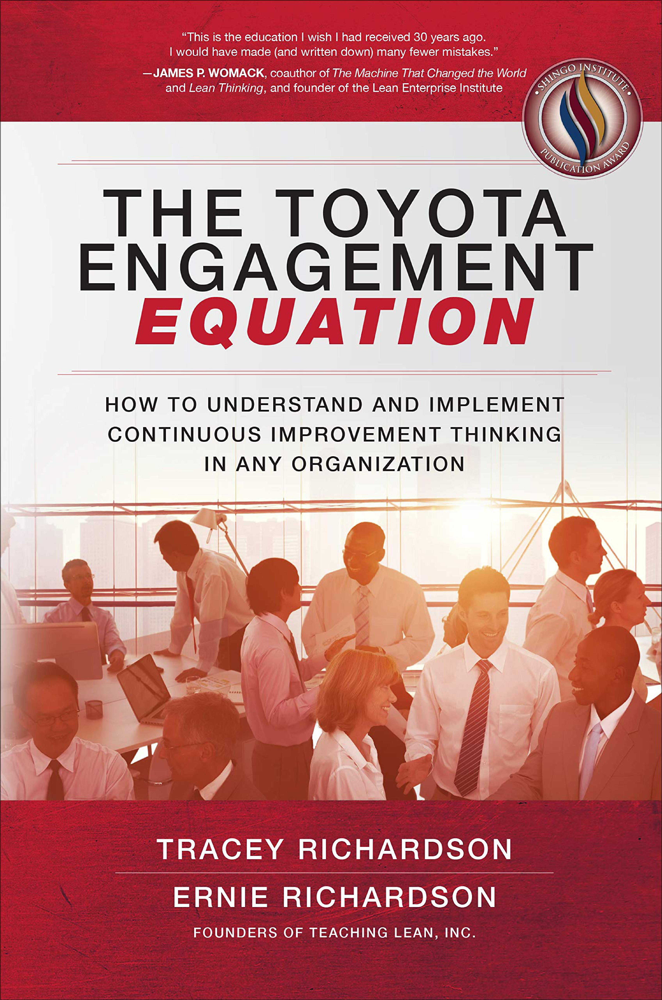

费老师拆书系列 · 第 2 本《丰田参与方程式》。把一本书读厚，再拆薄。 这一本，是两个 19 岁进厂的美国工人写的丰田”内功心法”。
为什么翻开它
上个月有位企业老板问费老师：我们精益工具都上了，看板有了、安灯有了、A3 表也人手一份了，怎么感觉越推越费劲，员工像是在”配合演出”？
费老师当时给他讲了一个故事，就出自这本书。
丰田肯塔基工厂，一位新上任的生产经理，因为设备故障把整个工厂停了一个多小时，大约 500 人停工，每分钟都在烧钱。他吓得都开始盘算怎么收拾工位上的私人物品了。这时候有人喊：社长来了。
社长张富士夫（Fujio Cho），步行一英里走到现场，仔仔细细看完维修日志，握住他的手，说了一句让费老师每次讲到都起鸡皮疙瘩的话：
“谢谢你把工厂停下来。我们会解决这个问题。”
这本书叫《The Toyota Engagement Equation》，费老师把它译作《丰田参与方程式》。作者 Tracey Richardson 和 Ernie Richardson 是一对夫妻，1988 年丰田在肯塔基建第一个全资美国厂时，一个 19 岁进厂当组员，一个从 IBM 跳过来当班长，被日本训练师手把手”养”了十几年。上面那个吓坏了的生产经理，就是作者本人 Ernie。

老规矩，读厚拆薄，咱们走一回。
读厚：溯到源头
讲丰田的书，费老师书架上少说有五十本。为什么单挑这本刨到底？
因为写丰田的人分两种：一种是站在厂外看的教授和顾问，一种是在厂里被丰田从零”养大”的人。这本书是后者，而且珍贵在时间点——1988 年他们入职时，“精益”这个词刚被发明出来，丰田内部根本不叫这套东西精益，作者原话说：“It didn’t have a name. 它就是我们的 J-O-B。”
刨到源头，费老师刨出一个反常识的细节。
这两口子退休后当了培训师，花了 10 年、几千个教学小时，就为把当年日本训练师教的”感觉”翻译成能教的东西。最后憋出来一个公式：
六项 GTS 思考习惯（Go to See 等六项，GTS6）+ 人人天天参与（Everybody Everyday Engaged，E3）= 纪律与担当（Discipline ‘n’ Accountability，DNA）
六个以 GTS 开头的解题素养（去现场看、把握现状、得出对策、固化标准、维持成果、拉伸拔高），加上 E3（Everybody Everyday Engaged，人人天天参与），等于 DNA——纪律与担当（Discipline ‘n’ Accountability）。
DNA 的定义才是全书的书眼：“DNA 就是没人盯着时，人们的行为方式。” 你品品，这不就是那位老板问的问题吗？工具都在，缺的是没人盯着时的那个东西。
 参与方程式总模型（费老师中英重绘）
参与方程式总模型（费老师中英重绘）
那”没人盯着时的行为方式”是怎么长出来的？书里给了一条链子：思考方式 → 决定行为 → 行为反复 → 变成习惯 → 习惯攒成文化。看清这条链，你就明白为什么文化没法靠开大会灌输——它只能从每天那些小动作里一节一节长出来：
 文化链：从思考方式到组织文化（费老师中英重绘）
文化链：从思考方式到组织文化（费老师中英重绘）
拆开：挑三个亮点
亮点 1｜一秒钟值多少钱？值 8 台凯美瑞。
训练师有一天让团队”找出流程里 1 秒的浪费”。组员都当他开玩笑：1 秒也值得找？
训练师把所有人叫到翻页板前算了笔账：全厂每个员工各省 1 秒，加起来，每个班次能多产 8 台凯美瑞——零投资。
费老师最爱的还有配套的另一半：作者当组员时迟到了 30 秒，当天就被组长约谈”怎么补偿这 30 秒”——因为她缺位的半小时里，班长得替她顶半个工位。一个班次 27,000 秒，节拍从 60 秒抠到 53 秒，全是这么一秒一秒省出来的。
很多工厂的问题不是员工不努力，是没人把宏观的账翻译成一线摸得着的语言。手套多用 25 台车、找零提前备好 48 美分——丰田的改善故事全是这个颗粒度。
亮点 2｜人，永远不是根因。
书里教根因分析，有条铁律让费老师拍案：查到最后发现”是某某没按规矩做”，也不许把人写成根因。
为什么？根因只有三类：没有标准、没遵守标准、标准本身错了。 没遵守，往下再问一个 why——是文件写得烂？培训没到位？还是标准反人性？把人钉在 A3 上，既不尊重人，也不科学，因为”换个人”这个对策什么也没解决。
作者管那种查法叫”五个谁+根源怪罪法”（five who’s and the root blame），专门用来讽刺开会追责的场面。真正的五问长什么样？书里有个绝的：内饰件间歇性划痕，厂里和供应商查了个底朝天都没头绪，最后派主管坐进货车车厢押车，跟了好几天，终于逮到——卡车赶上绿灯不减速，35 迈过一个路面凹陷，整车零件被抛起来 4-5 英寸再砸下去。司机赶上绿灯的概率只有 10-15%，所以问题时有时无。
根因藏这么深，会议室里的头脑风暴够得着吗？
亮点 3｜没有问题？那就制造一个。
作者当组长时 KPI 全绿，训练师来现场看了 45 分钟。她心想这回该表扬了吧。训练师开口：
“你的团队有 10 个人——请用 9 个人做这些事。”
不是裁员（丰田承诺改善不裁人，多出的人转岗去了新任务），是主动制造差距。书里管这叫主动创造的差距（Created Gap）：达标太久的标准，就该抬高一档，白得一个差距当练兵场。大野耐一那句话就是给这事背书的：“没有问题，是最大的问题。”
三个月后，9 个人跑得比 10 个人还顺。最扎心的是：训练师早就看出来 9 人可行，但他不说，让团队自己看见。
 两种差距：被造成的与主动创造的（费老师中英重绘）
两种差距：被造成的与主动创造的（费老师中英重绘）
差距还得会往下切。书里这张图讲的是：公司层的一个大差距，要一层层分解到车间、班组、工位，每一层都有自己那一小截，谁都能说清”我这一截是多少”。换成你的厂：老板说今年成本降 8%，如果这 8% 到了班组长嘴里还是”降 8%“，那就是没分解——分解到位的样子是”我这条线每台车少用 3 分钟工时、每月少扔 40 公斤边角料”。
 多层级差距分解（费老师中英重绘）
多层级差距分解（费老师中英重绘）
拆薄：搬进车间
这本书费老师拆下来，最能直接上手的是三张表。
第一张，《根因五问+白区检验表》。左边一列往下问 why，右边一列往上用”所以”回推——双向都通，因果链才算数。表里预填了书中那条经典链条（迟到→电瓶→皮带→保养计划），照着填就会。
这张表不是孤零零的，它挂在丰田那套八步解题法（TBP，Toyota Business Practices）上——八步其实就是 PDCA 的展开版，前四步全在 P 里，很多厂子跳过前四步直接干，这就是为什么改善做完了效果留不住：
 丰田八步解题法与 PDCA 的对应（费老师中英重绘）
丰田八步解题法与 PDCA 的对应（费老师中英重绘）
第二张，《Gemba Walk 三支柱检查表》。老板下车间不是”视察”，是带着三个问题去：员工说得出自己和公司目标的连线吗？可视板上红了几天的项有人管吗？最近的改善是除根还是打补丁？八个检查项，1-5 分的评分标准都替你写好了，打分就行。
第三张，《DAMI 标准状态看板》。每个标准都标上它处在哪个状态：定义 Define、达成 Achieve、维持 Maintain、改进 Improve——一眼看出哪个标准”舒服”太久该抬杠了。
这些表全部中英对照，出处页码都标着，方便对着原书较真。
本月就能动手：给企业的四点实战建议
表拿到手，还得知道先动哪一步。费老师按”这个月就能开干、不用立项不用花钱”的标准，从这本书里挑出四个动作，从易到难排好了：
① 把”问题定义三问”贴进每个会议室。 标准是什么？现状是什么？差距是多少？以后一切改善话题，先回答这三问再往下说，谁也不许讲”差不多、好几次、有一些”。费老师的观察是：90% 的无效会议，都死在没有这三问上。
② 本月做一次”读 A3 倒推”审计。 抽最近 3 个已经结案的改善项目，从结果倒着往回推——这个成果真是那条对策带来的吗？那条对策真的对着那个根因吗？查出来几个”其实是运气好”的项目一点都不丢人，恰恰是最好的教学素材。倒推怎么走，照着这张图念一遍就会：
 读 A3 倒推：从结果一路验算回问题（费老师中英重绘）
读 A3 倒推：从结果一路验算回问题（费老师中英重绘）
③ 给每位主管配一句每日流程问话（How’s Your Process，简称 HYP）。 每天到现场问一句”你的流程今天怎么样？“，答案写上白板。这是成本最低的领先指标系统，不用上任何软件，一周就能看出问题浮出水面的速度变了。
④ 今年主动创造一次差距（Created Gap）。 选一条稳定的产线或流程，把达标很久的指标抬高一档（比如不良率 1.5% → 1%），把多出来的这个差距当”练兵场”——但有两条铁律：配足辅导，禁止和裁员挂钩。否则丰田式的成长会变成中国式的内卷。
四条里最容易被跳过的是第②条，最容易被做歪的是第④条。费老师的建议是：前三条这个月全做，第四条等前三条跑顺了再说。
递给你
老规矩，把这本书拆出来的东西，收成一张能贴墙上的单子：
- 文化的定义：没人盯着时的行为方式； 工具装不出来，只能每天长出来；
- 把大账翻译成一线语言：一秒=8 台车，比”降本增效”四个字管用一百倍；
- 问题定义三问先行：标准是什么？现状是什么？差距可测吗？不许说”差不多、好几次”；
- 人不是根因，根因只有三类：无标准、未遵守、标准错了；
- 改善项目结束前，读一遍”倒推”：从结果倒着验算回问题，防运气冒充实力；
- 达标太久就主动抬杠，稳定即练兵场；
- 领导下现场的第一句话：“你的流程今天怎么样？“第二句：“家里都好吗？”
- 解雇一个员工 = 领导失败——E3 里的 Everybody，是真的每一个人。
做工厂的、带团队的、搞运营的，都可借鉴哈。
📚 费老师拆书 · 已拆 2 / 首季 12 本 ✅ 欢迎问题，收获成功 ✅ 丰田参与方程式 ⬜ 每日管理三大核心模块 ⬜ 丰田生产系统手册 1973 ⬜ ……
想要文里那张**《Gemba Walk 三支柱检查表》**的朋友，公众号后台回复「现场」，费老师发你，评分标准都预填好了、能直接用。
写这篇的时候，费老师老想起书里那个戴着绿漆安全帽的班长。闯了那么大的祸，一个月后还把那顶沾满绿漆的帽子戴在头上。别人问他为什么，他说：因为那天你尊重了我。
管理的全部秘密，其实就藏在这顶帽子里。
流水不腐，改善不止。我们下期再会。
—— 流动智造（FLOWSMART）× 流易数智（EASYFLOW） 费老师

相关术语：七大浪费 · 标准作业 · 根本原因分析 · 5个为什么 · A3报告 · 现场 · 改善文化 · 目标状态
本系列：← 第001本 · 全部笔记 · 拆书台账 · 第003本 →
彩蛋：正篇讲方法，案例留给了彩蛋篇 → 第002本案例集